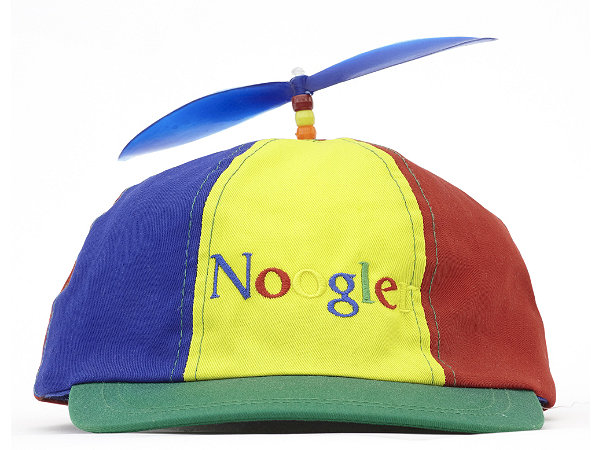

怎样尊重一个程序员
得知一位久违的同学来到了湾区，然而我见到他时，这人正处于一生中最痛苦的时期。他告诉我，自己任职的公司在他加入之前和之后，判若两人。录取的时候公司对他说，我们对你在实习期间的表现和学术背景非常满意，你不用面试，甚至不用毕业拿学位，直接就可以加入我们公司成为正式员工。然而短短一年后的今天，这位同学已经完全感觉不到公司对自己技能的尊重。Manager让他做一些乱七八糟没技术含量的事情，还抱怨说他做事太慢，并且在他的evaluation上很是写了一笔。在人格尊严和生活安全感的双重打击之下，这位同学压力非常大，周末经常偷偷地加班，仍然无法让manager满意。
我很了解这位同学的能力，在任何一流公司任职，肯定是绰绰有余了。他的名字我当然保密，然而他所任职的公司因为太过嚣张，我不得不直接指出来——这就是被很多人膜拜得像天堂一样的地方，Google。这位同学所描述的遭遇，跟我几年前在Google的实习经历如出一辙。我仍然记得，Google的队友在旁边看着我用Emacs，用小学老师似的口气对我说：“按Ctrl-k！” 我仍然记得，在提交队友完全无法写出来的高难度代码时，被指责和嘲笑不会用Perforce。我仍然记得，吃饭时同事们对所谓“Google牛人”眉飞色舞的艳羡……
就算你受到过世界上最好的教育，能完成世界上没有第二个人能够完成的工作，比起Googler们心目中的所谓“大牛”，你仍然什么都不是。在Google的每一天，我都感觉自己在上演《皇帝的新装》。我在给皇帝做一件美轮美奂的衣服，愚蠢或者不称职的人都看不见这件衣服。皇帝的大臣时不时来视察一下，却发现无法看见我织的布料…… 我又像是在上演《叶公好龙》，有一位叫叶公的人，声称要寻找世界上最顶尖，最有创造力，掌握精髓知识，不循规蹈矩的人才。可当真的见到这种人的时候，他害怕了。他无法理解这种能力，不知道如何尊重它，保护它，使用它。他恼羞成怒，怎么会有人比我还聪明！他闭上眼默念，我才是世界上最厉害最聪明最伟大的！他吹毛求疵，用肤浅愚蠢的标准来评判龙的价值……
我的这位同学也算得上本领域顶尖的专家了。如此的践踏一个专家的价值，用肤浅的标准来评判和对待他们，Google并不是唯一一个这样的公司。我之前任职的好几个公司，或多或少都存在类似的问题。很多时候也不一定是公司管理层无端施加压力，而是程序员之间互斗的厉害，互相judge，伤害自尊。从最近Linus Torvald在演讲现场公然对观众无理，你可以看出这种只关心技术，不尊重人的思潮，在程序员的社区里是非常普及的。
后来我发现，并不是程序员故意想要藐视对方或者互相攻击，而是他们真的不明白什么叫做“尊重”，他们不知道如何说话才可以不伤害另一个程序员，所以有时不小心就让另一个程序员怒火中烧。所以说，尊重他人其实是一个“技术问题”，而不是有心想做就可以做到的。因为这个原因，我想在下文里从心理和技术角度出发，指出IT业界不尊重人现象的起源，同时提出几点建议，告诉人们如何真正的尊重一个程序员。我希望这些建议对公司的管理层有借鉴意义，也希望它们能给与正在经受同样痛苦的程序员们一些精神上的鼓励。
我觉得为了建设一个程序员之间互相尊重的公司文化，应该注意以下几个要点。
认识和承认计算机系统里的历史遗留糟粕
很多不尊重人现象的起源，都是因为某些人偏执的相信某种技术就是世界上最好的，每个人都必须知道，否则他就不是一个合格的程序员。这种现象在Unix的世界尤为普遍。Unix系统的鼓吹者们喜欢到处布道，告诉你其它系统的设计有多蠢，你应该遵从Unix的“哲学”。他们仿佛认为Unix就是世界终极的操作系统，然而事实却是，Unix是一个设计非常糟糕的系统。它似乎故意被设计为难学难用，容易犯错，却美其名曰“强大”或者“灵活”。Unix的设计者其实基本不懂设计，他们并不是世界上最好的程序员，却有一点做得很成功。那就是他们很会制造宗教，煽动人们的盲从心理，把自己的设计失误推在用户身上，让用户觉得不会用这系统是自己的错。
如果你对计算机科学理解到一定程度，就会发现我们其实仍然生活在计算机的石器时代。特别是软件系统，建立在一堆历史遗留的糟糕设计之上。各种设计蹩脚的操作系统（比如Unix，Linux），程序语言（比如C++，JavaScript，PHP)，数据库，…… 时常困扰着我们，这就是为什么你需要那么多的所谓“经验”。然而，很多IT公司不喜欢承认这一点，他们一向以来的作风是“一切都是程序员的错！”，“作为程序员，你应该知道这些！” 这就造成了一种“皇帝的新装现象”：大家都不喜欢用一些设计恶劣的工具，却都怕别人嘲笑或者怀疑自己的能力，所以总是喜欢显示自己“会用”，“能学”，而没有人敢说它难用，并且指出设计者的失误。
我这个人呢，就是这种“黑客文化”的一个反例。每当有人因为不会某种工具或者语言来请教我时，我总是很轻松的调侃这工具的设计者，然后告诉他，你没理由知道这些破玩意儿，但其实它就是这么回事。然后我一针见血的告诉他这东西怎么回事，怎么用，是哪些设计缺陷导致了我们现在的诡异用法…… 我觉得所有的IT从业人员对于这些工具，都应该是这样的调侃态度。只有这样，软件行业才会得到实质性的进步，而不是被一些糟糕的设计所困扰，造成思维枷锁。
总之，这是一个非常重要的“态度问题”。虽然在现阶段，我们有必要知道如何绕过一些设计拙劣的工具，利用它们来完成自己的任务。然而在此同时，我们必须正视和承认这些工具的恶劣本质，而不能拿它们当教条，怪罪于程序员。只有这样，我们才能有效地尊重程序员们的智商。
分清精髓知识和表面知识，不要太拿“经验”当回事
IT公司经常有这样的人，以为精通一些看似复杂的命令行，或者某些难用的程序语言就很了不起似的。这些人没有发现，自己身边有些同事其实掌握着精髓的知识，他们完全有能力从自己已有的知识，衍生制造出所有这些工具（而不只是使用它们），甚至设计得更加完善和方便易用。这种能够设计制造出更好工具的人，往往身负更加重要的任务，所以他们往往会在被现有工具的用法迷惑的时候，非常谦虚的请同事帮助解决，大胆的承认自己的糊涂。
如果你是这个精通工具用法的人，切不可以把同事的谦虚请求当成可以显摆自己“资历”的时候。这同事往往真的是在“不耻下问”。他并不是“搞不懂”，而是根本不屑于，也没有时间去考虑这种低级问题。他的迷惑，往往来源于工具设计者的失误。他很清楚这一点，然而为了礼貌，他经常不直接批评这工具的设计，而是谦虚的责怪自己。所以同事向你“虚心请教”，完全是为了制造一种友好融洽的气氛，这样可以节省下时间来干真正重要的事情。这种虚心并不等于他在膜拜你，承认自己的技术能力不如你。
所以正确的对待方式应该是诚恳的表示对这种迷惑的理解，并且坦率的承认工具设计上的不合理，蹩脚之处。如果你能够以这种谦和的态度，而不是自以为专家的态度，同事会高兴地从你这里“学到”他需要的，肤浅的死知识，并且记住它，避免下次再为这种无聊事来打扰你。如果你做出一副“天下只有我知道这奇技淫巧”的态度，同事往往会对你，连同这工具一起产生鄙视的情绪。他下次会照样记不住这东西的用法，然而他却再也不会来找你帮忙，而是一拖再拖。
解释意图和动机，不要使用低级命令
随时都要记住，同事和下属是跟你智力相当的人。他们是通情达理的人，然而却不会简单地服从你的低级命令。像我在Google的队友的做法，就是一个很好的反面教材。其实这位Googler只是想告诉我“删掉这行文本，然后改成这样……”，然而她却没有直接表明这种“高级意图”，而是使用非常低级的指令：“按Ctrl-k！……” 语气像是在对一个不懂事的小学生说话，好像自己懂很多似的。
有哪个Emacs用户不知道Ctrl-k是删掉一行字呢，况且你现在面对的其实是一个资深Emacs用户。我想大家都看出来这里的问题了吧。这样的低级命令不但逻辑不清楚，而且是对另一个人的智力的严重侮辱。你当我是什么啊？猴子？如果这位Googler表明自己的高级意图，就会很容易在心理上和逻辑上让人接受，比如她可以说：“配置文件的这行应该删掉，改成……”
在项目管理的时候也需要注意。在让人做某一件事之前，应该先解释为什么要做这件事，以及它的重要性。这样才能让人理解，才能尊重程序员的智商。
不要期望新人向自己学习
很多IT公司喜欢把新人当初学者，期望他们向自己“学习”。比如，Google把新员工叫做“Noogler”（Newbie Googler的意思），甚至给他们发一种特殊的螺旋桨帽子，其寓意在于告诉他们，小朋友要谦虚，要向“伟大的Google”学习，将来才可以飞黄腾达。

这其实是非常错误的作法，因为它完全不尊重新员工早已具备的背景知识，把自己的地位强加于他们头上。其实Google里面真的有很多值得学习的东西吗？学校的教育真的一文不值吗？其实恰恰相反。我可以坦然的说，我从自己的教授身上学会了最精髓的知识，而从Google得到的，只是一些很肤浅的，死记硬背就可以掌握的技能，而且其中有挺多其实是糟粕。我在Google做出的所有创新成果，全都是从学校获得的精髓知识的衍生物。很多PhD学生鄙视Google，就是因为Google不但自己技术平庸，反倒喜欢把自己包装成最先进的，超越其它公司和学校的，并且嚣张的期望别人向他们“学习”。
一个真正尊重人才的公司会去了解，尊重和发挥新人从外界带来的特殊技能，施展他们特有的长处，而不是一味期望他们向自己“学习”。只有这样，我们才能保持这些锐利武器的棱角，在激烈的竞争中让自己立于不败之地。如果你一味的让新人“学习”，而无视他们特有的长处，最后就不免沦为平庸。
程序员的工作量不可用时间衡量
很多IT公司管理层不懂得如何估算程序员的工作量。如果你能力很强，在很短的时间内把最困难的问题解决了，接下来他们不会让你闲着，而会让你做另外一些很低级的活。这是很不合理的作法。打个比方，能力强的员工就像一辆F1赛车，马力和速度是其他人的几十倍。当然，普通人需要很长时间才能解决，甚至根本没法解决的问题，到他手里很快就化解掉了。这就像一辆F1赛车，眨眼工夫就跑完了别人需要很久的路程。如果你用时间来衡量工作量，那么这辆F1赛车跑完全程只需要很短时间，所以你算出来的工作量就比普通车子小很多。你能因此说F1赛车工作不够努力，要他快马再加鞭吗？这显然是不对的。
物理定律是这样：能量 = 功率 x 时间。工作量也应该是同样的计算方法。英明的，真正理解程序员的公司，就不会指望高水平的程序员不停地工作。高水平程序员由于经常能够另辟蹊径，一个就可以抵好几个甚至几十个普通程序员。他们处理的问题比常人的困难很多，费脑力多很多，当然他们需要更好的休息，保养，娱乐，……
当然这并不是说初级的程序员就应该过量工作。编程是一项艰苦的脑力活动，超时超量的工作再加上压力，只会带来效率的低下，质量的降低。
不要让其他人修补自己的BUG
这个我已经在一篇专门的文章里讨论过。让一个程序员修补另外一个程序员的BUG，不但是效率低下，而且是不尊重程序员个人价值的作法，应该尽量避免。
如果有人离开公司，必须要有人修补他遗留下来的BUG，那么说话应该特别特别的小心。你必须指出需要他帮忙的特殊原因，强调这件事本来不是他的错，本来是不应该他来做的，但是有人走了，没有办法，并且诚恳的为此类事情的发生表示歉意。只有这样，程序员才会心甘情愿的在这种特殊关头，修补另外一个人的BUG。